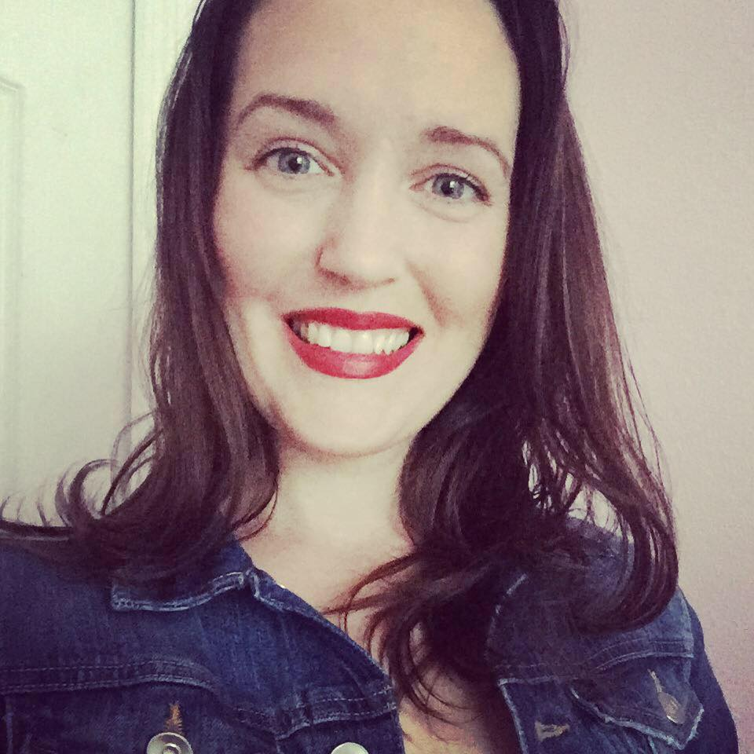

Charlotte Goodwin
About Me
I'm a full stack web development bootcamp student at the University of Central Florida entering the tech field as a second career. With a background in healthcare, most recently working in the Intensive Care Unit as a registered nurse, I understand the role that technology plays in even the smallest and most intricate details of our lives. I am impressed by and drawn to the efficiency and optimization that technology brings, and would like to bring my skills of being a detail oriented, forward thinking individual into this exciting field.
This portfolio site is where I will be showcasing my abilities, and will be updated as I gain new skills and progress throughout my studies. Although not yet sure of where I see myself landing professionally for the first leg of this new journey, I am excited to explore the many options available and consistently seeking opportunities for growth.